A redesigned selling screen built on top of the standard Odoo Point of Sale. Sessions, offline mode, payments, receipts and accounting stay 100% native: only the cashier experience changes, and your shop gains stock visibility and cash-desk control.
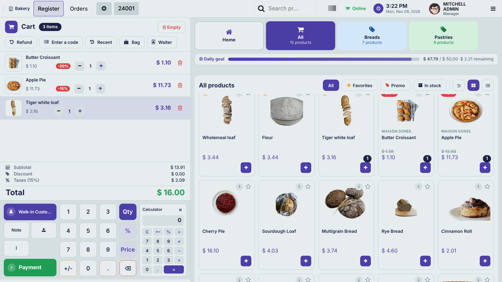
Set a promotion for a period with a standard Odoo pricelist (start and end dates). Products sold below their public price get a discount badge and their old price crossed out, and come first on the home view every time the register opens.
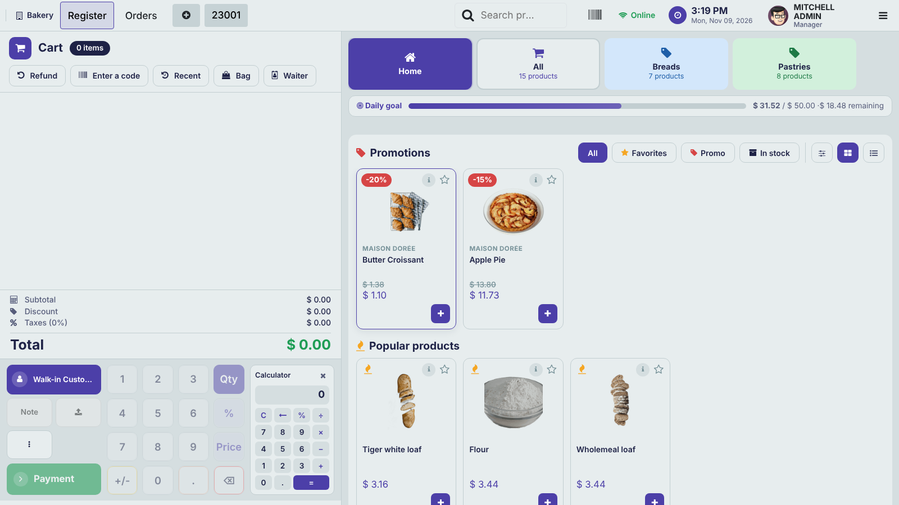
Ideal for clothing, shoes and accessories: switch on Product Brands in the settings to get a Brand field on the products. The brand is shown on the register cards and the cashier can search by brand. Off by default, nothing changes for shops that do not need it.
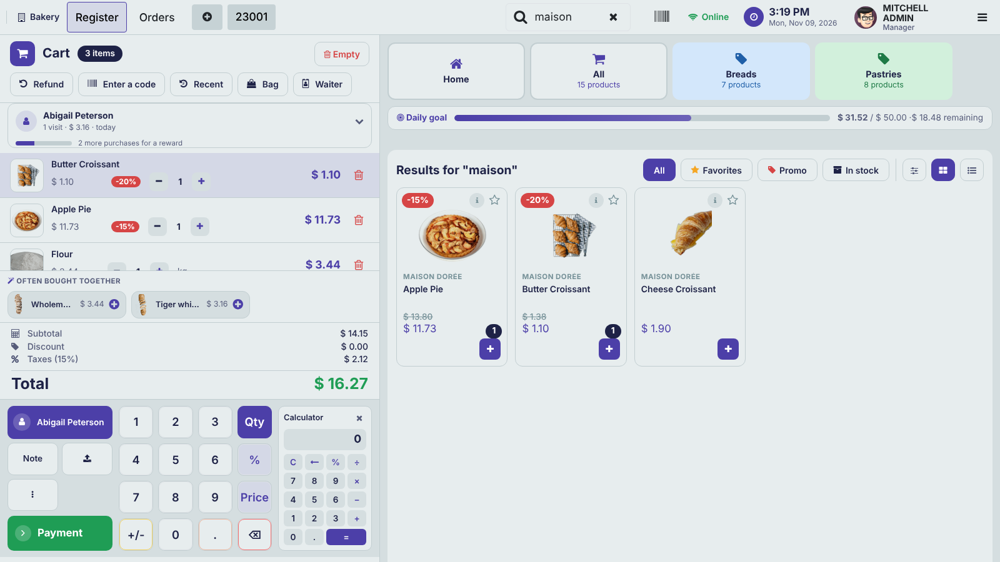
The product flies to the cart, counters pulse, an animated confirmation closes the sale, with optional soft sounds. Suggestions of products often bought together, a quick customer card (spending, visits, VIP, birthday, reward progress), a daily goal bar, low stock alerts, keyboard shortcuts and typo-tolerant search keep cashiers fast. Color theme, tile size and logo per Point of Sale.
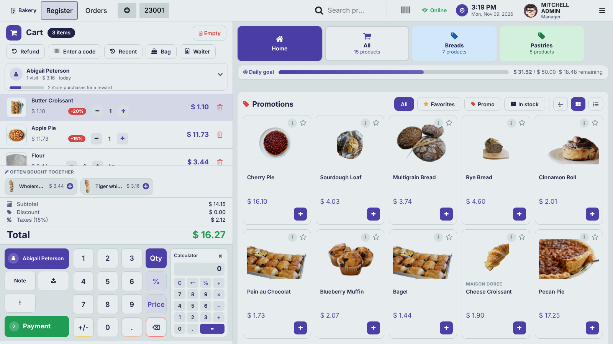
Bright, Soft or Dimmed - chosen per Point of Sale. Printed receipts are not affected.
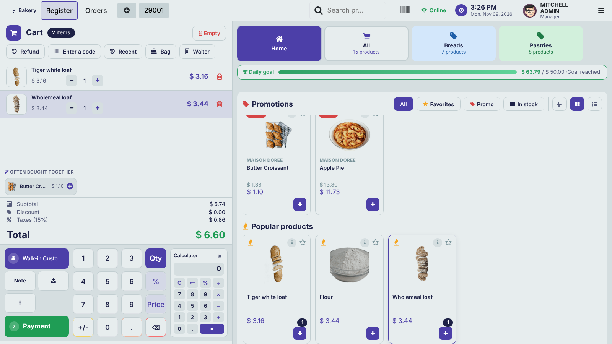
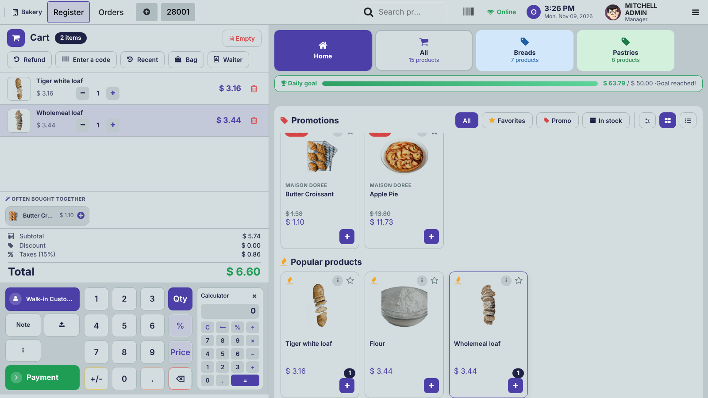
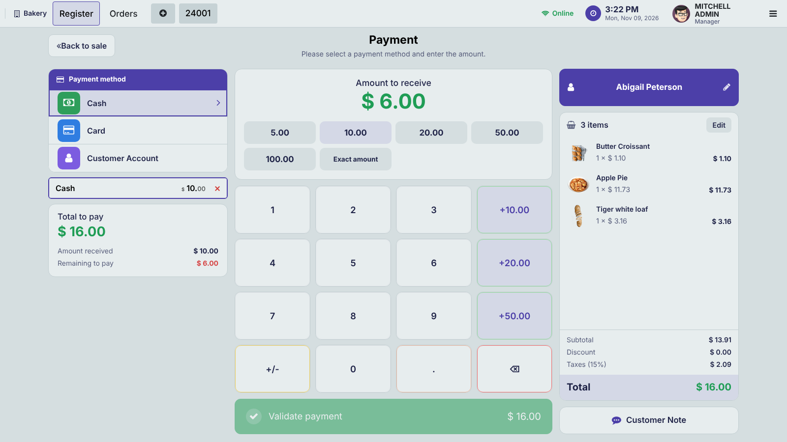
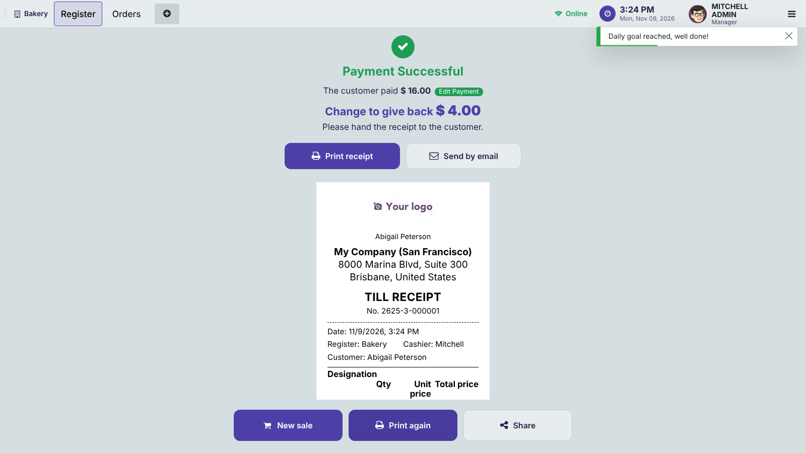
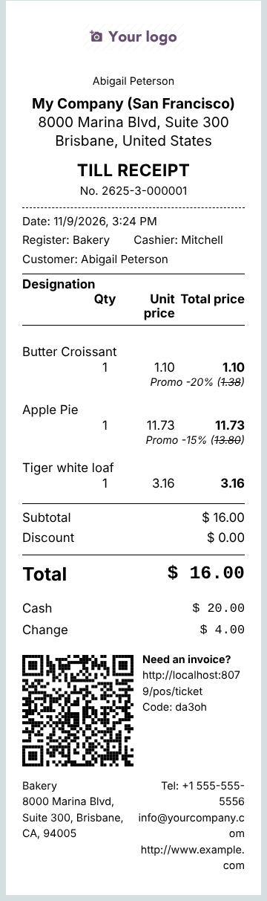
Cashier restrictions, set per Point of Sale. They are checked again on the server, so they cannot be skipped from the browser.
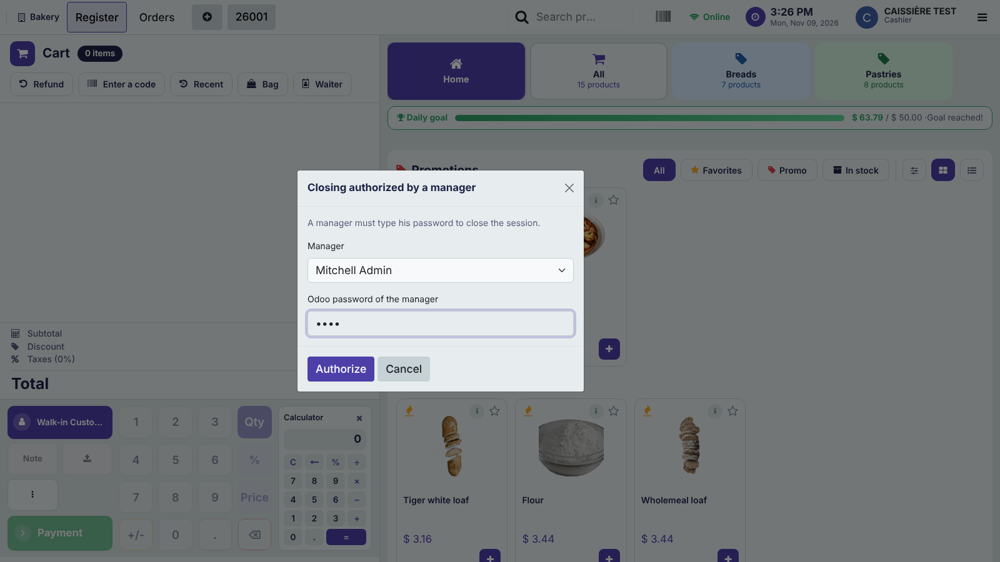
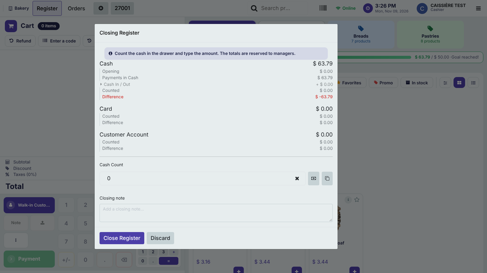
Turnover, tickets, average basket and customers served with comparison to the previous period, sales trend, payment methods and a card per cash desk.
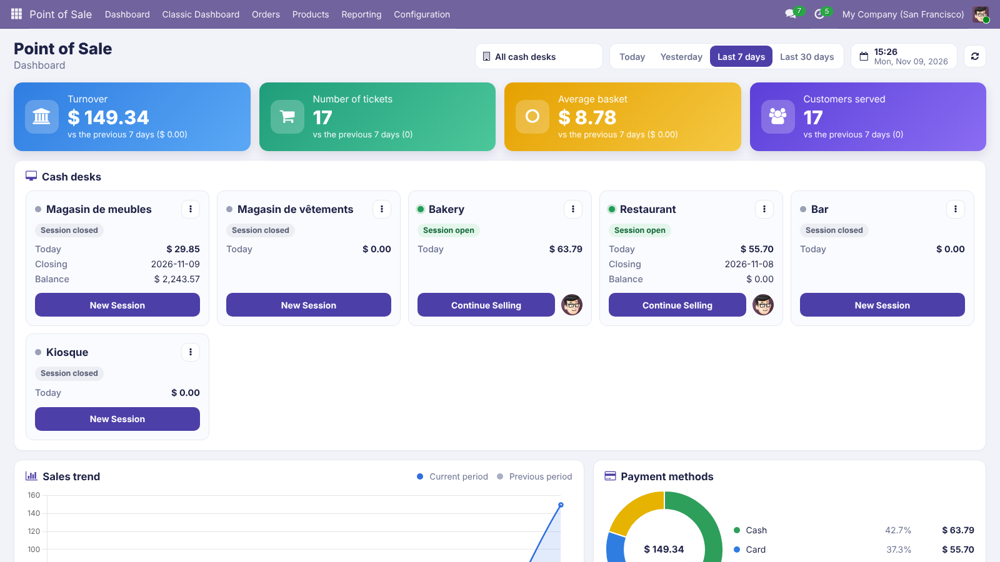
While the Point of Sale starts, a GARESE card with an animated logo, a smooth loading bar and rotating messages replaces the standard loader.
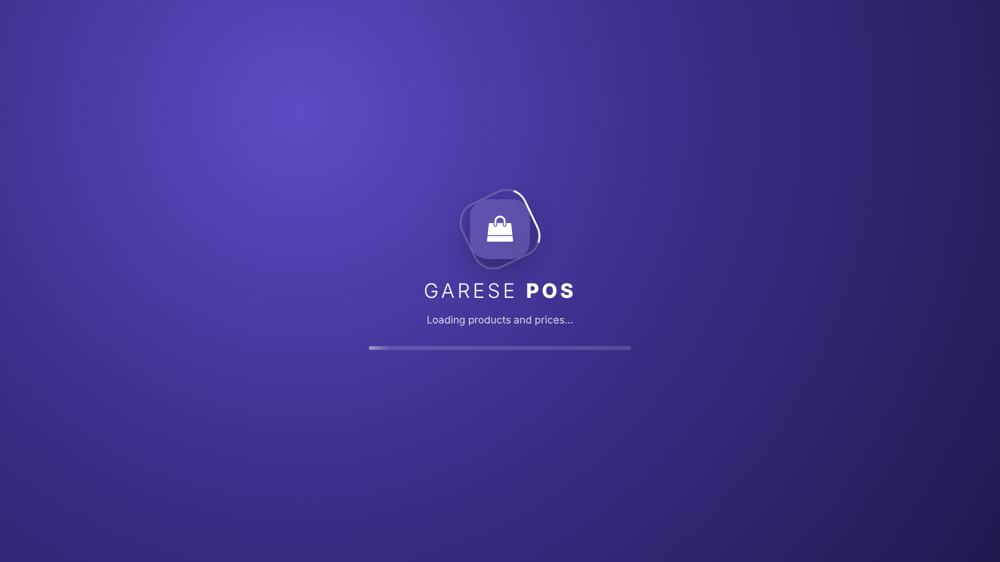
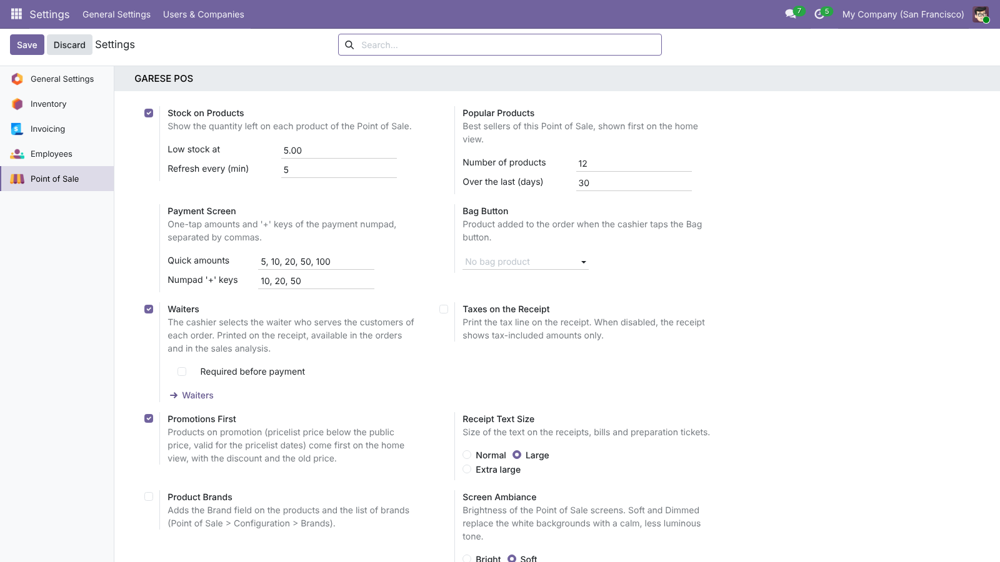
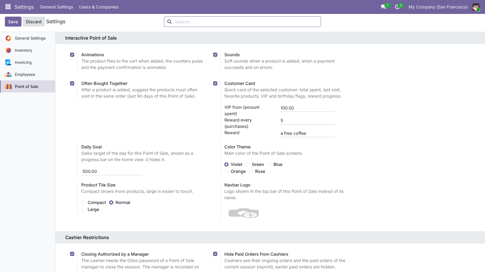
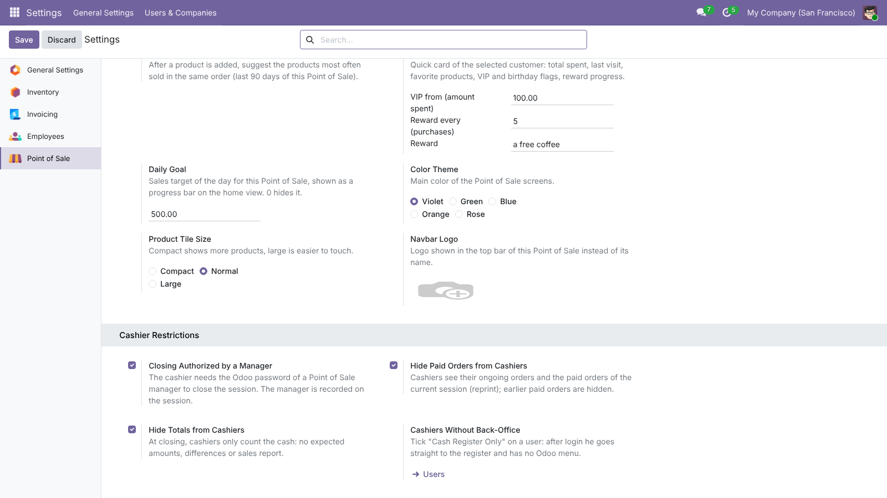
Odoo 19.0 Community and Enterprise. Works with pos_sale, pos_loyalty (promotions, coupons, codes), pos_discount, pos_restaurant and pos_hr. Phones keep the standard Odoo layout. English and French included.
Add GARESE POS - Restaurant for a floor plan with table states and waiters, and GARESE POS Approvals for manager-approved discounts, price changes, refunds and cancellations.
GARESE – Odoo integration – Libreville, Gabon